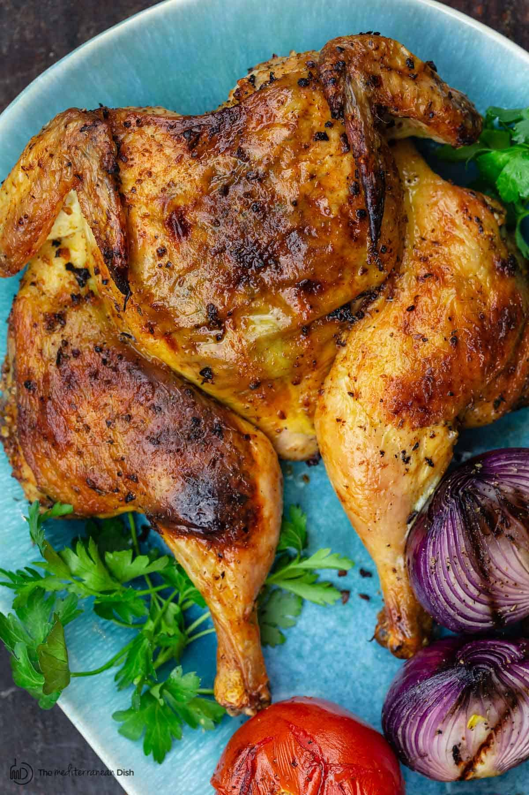

DESCRIPTION Let your chicken marinate for at least 4 hours, and up to 12 hours. Preheat your chicken to 400 degrees F and scrape off any leftover bits from the grates. Place your chicken breasts on your preheated grill, and close the lid. It's important to keep the lid of your grill closed while your chicken is cooking so that no heat escapes. Cook your chicken breast on the grill for 6-8 minutes on one side. After 6-8 minutes flip your chicken breast and cook for 6-8 minutes more. Cook time will vary a bit depending on the size of your chicken breast, so be sure to check the internal temperature in the thickest part of the chicken breast using a meat thermometer. When the internal temperature reaches 165 degrees F, your chicken is done and can be transferred to a clean plate or cutting board. Immediately cover the chicken with aluminum foil to let it rest for 5-10 minutes before cutting into. This helps the juices stay in the chicken breast.